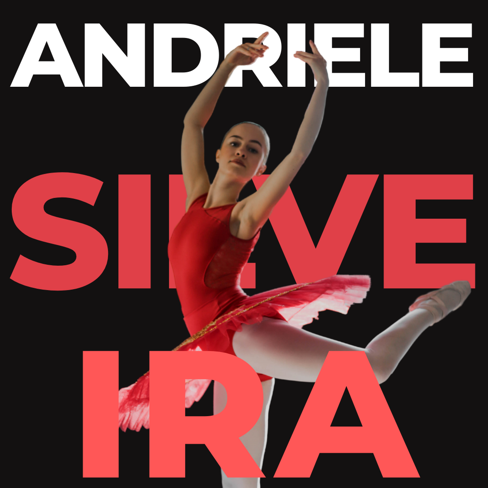
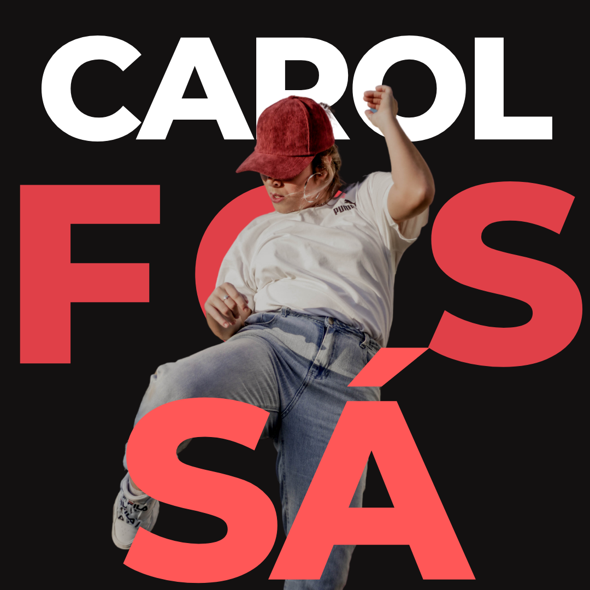
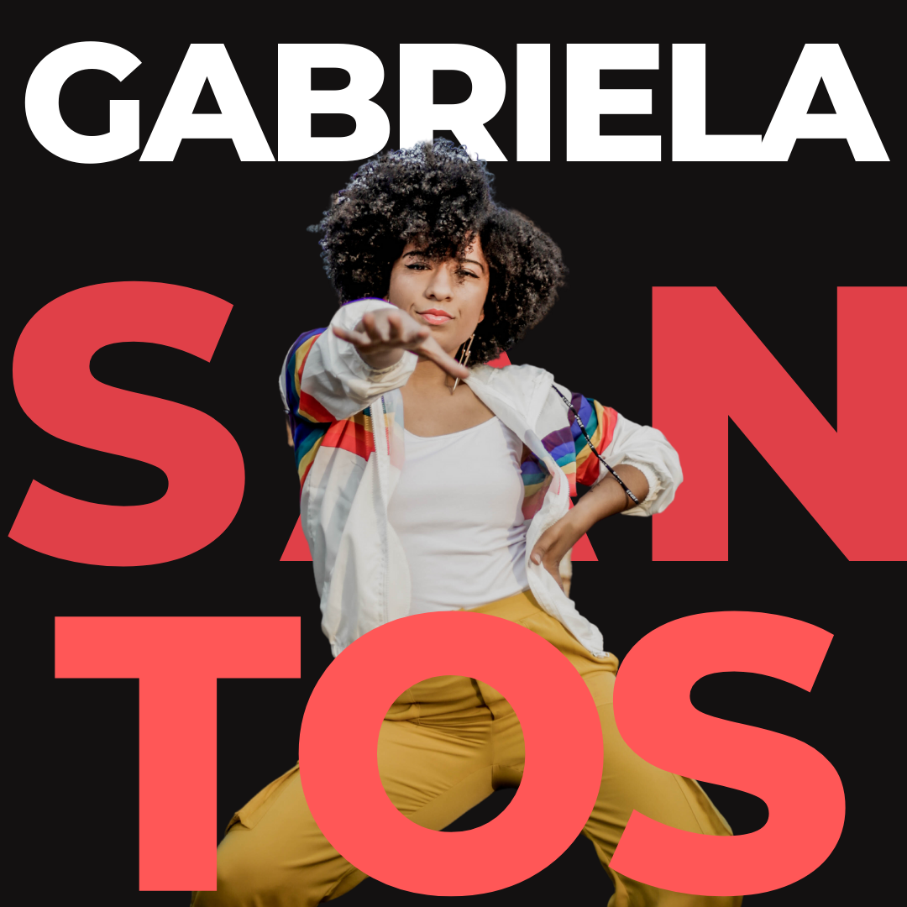
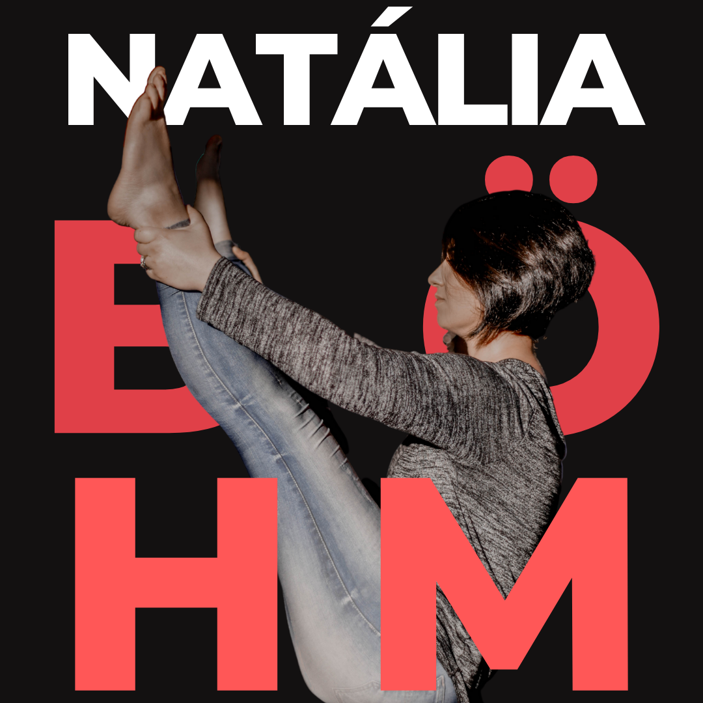
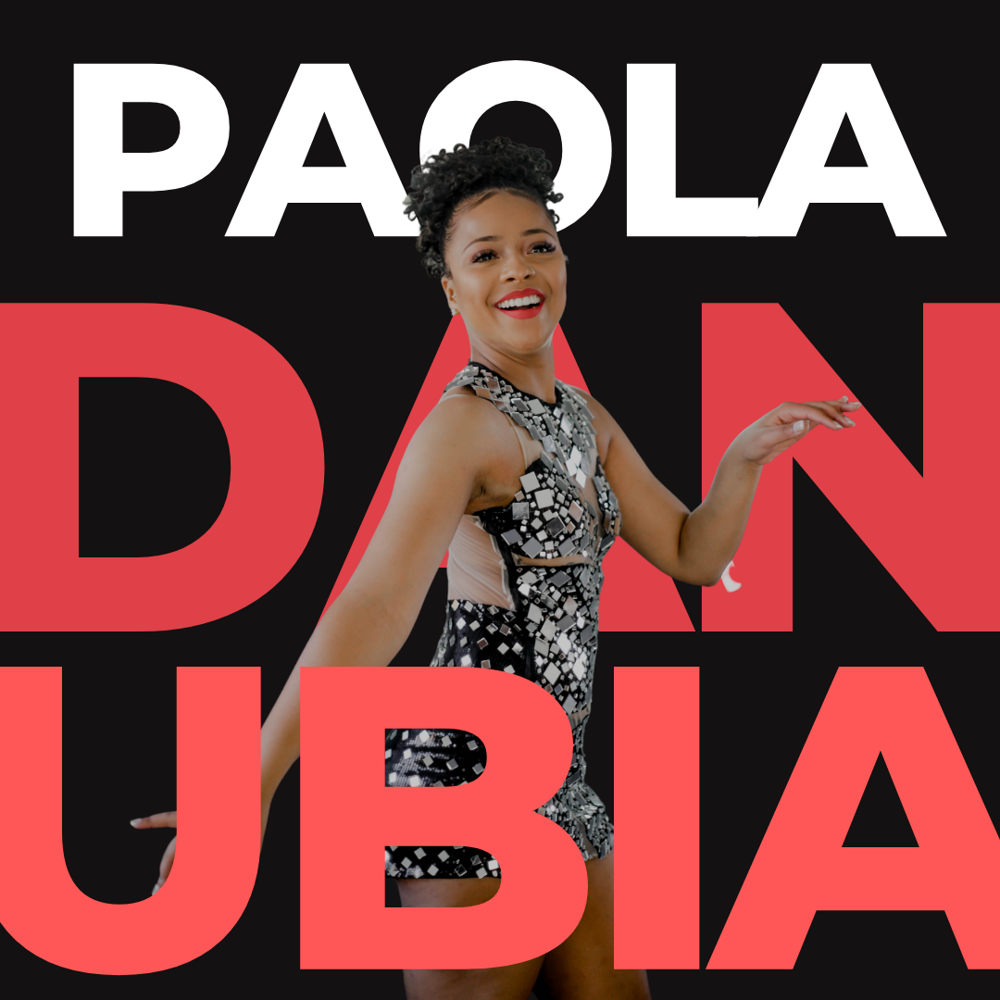

Professore, Bailarine e Coreografe: Estudante de Dança Licenciatura - UERGS - Montenegro. Iniciou seus estudos em dança aos 10 anos de idade, aos 14 anos começou a fazer um curso de Dança na Escola Salesiana Novo Lar. Bailarine e co-coreografe por 6 anos no Grupo de Dança Performance&Company/Nl Dance Crew. Atualmente Bailarine do Grupo Art&Dança desde 2017.

Estudante de fisioterapia, bailarina desde 2009 e professora de Ballet Clássico desde 2016, já participou de diversos workshops e espetáculos como bailarina e festivais nacionais recebendo premiações nas áreas de Ballet, Jazz e Hip-Hop dance. No atual momento, ministra aulas de Ballet Clássico na Ópera Dança, Baby class na Casa da Art e Dança infantil no Espaço de Dança Sol.

Professore, Bailarine e Coreografe: Estudante de Dança Licenciatura - UERGS - Montenegro. Iniciou seus estudos em dança aos 10 anos de idade, aos 14 anos começou a fazer um curso de Dança na Escola Salesiana Novo Lar. Bailarine e co-coreografe por 6 anos no Grupo de Dança Performance&Company/Nl Dance Crew. Atualmente Bailarine do Grupo Art&Dança desde 2017.

Acadêmica do curso de Licenciatura em Dança na Universidade Estadual do Rio Grande do Sul (UERGS). Atuante como professora nas áreas de danças urbanas, obtendo estudos e experiência com a dança contemporânea. Como bailarina e coreógrafa, participa de Festivais Nacionais e internacionais e ministrando workshop fora e dentro do estado. Integrante do Canoas Coletivo de Dança, dirigido por Carlota Albuquerque, como intérprete - criadora. Junto ao Canoas Coletivo integrou em diversos eventos, entre ele a Temporada no Teatro Municipal de Niterói – Rio de Janeiro com o espetáculo WHATSAPP PARA SHAKESPEARE juntamente com a Companhia de ballet de Niterói do ( RJ). Participante dos festivais Palco Giratório e Porto Alegre em Cena.

Bailarina clássica formada pela escola La Tablada - Canoas, bailarina dos grupos Art&Dança, Cia Mandume e Coletivo Opsis. Experiência com ensino de dança para crianças a partir dos 3 anos de idade. Professora e pesquisadora em Dança e Parkinson da UFRGS(Universidade Federal do Rio Grande do Sul) nos anos de 2017-2018. Certificada em Artes Performáticas pela Universidade da Califórnia em Los Angeles. Estudante de Dança - Licenciatura na UFRGS. Atualmente professora de dança na Casa da Art - Canoas nas modalidades de Pop Dance e Uniters.

Graduada em licenciatura em Educação Física desde 2011 pela Universidade La Salle, pós graduada em dança pela UFRGS(Universidade Federal do Rio Grande do Sul), formada em Ballet Clássico, atuou como professora de ballet por 10 anos. Certificada como instrutora de Pilates clássico pela escola Corper, atuando na área há quatro anos. Segue aprofundando seus conhecimentos na área do Pilates através de diferentes cursos de educação continuada.

Paola Danubia atual Rainha do carnaval de Canoas 2020, iniciou na dança aos 6 anos de idade no Ballet clássico. Em 2006 iniciou sua trajetória como bailarina na escola Art & Dança - Canoas; desde o grupo infantil até o grupo adulto, que hoje em dia se faz presente. No Carnaval de Canoas, já atuou como Madrinha de bateria, Rainha de Harmonia e também Ala de Passistas na Escola Nossas Raízes. Participou de diversos eventos de dança nacionais e internacionais e workshops com Carlinhos do Salgueiro e Mayara Lima.
Graduada em Dança - Licenciatura pela UERGS e pós-graduanda em Arte e Educação pela UNIASSELVI. Professora-Artista-Educadora-pesquisadora, dançarina e coreografa, iniciou na dança aos 5 anos de idade no Ballet Clássico. Aos 19 anos, começou seus estudos práticos formalmente em Hip-Hop dance. Em 2015, aprofundou seus estudos teórico-práticos em Dancehall, modalidade que segue como linha de pesquisa em dança além de, também, ministrar aulas. Já teve experiências com Hip-Hop dance, Jazz Funk, dança contemporânea, experimental, dança moderna além de participar de workshops que apresentam diversas modalidades dentro das danças urbanas. Já participou de festivais de dança como Dança comigo Torres (2012/2013), Bento em Dança (2012/2013/2015), Garopaba em Dança(2016), Sul em Dança(2017) e MDA Summer Class(2019). Atualmente, é professora de Dancehall na Escola de Dança Casa da Art e criadora da modalidade Pop Dance também ofertada no Estúdio. Tracy também é dançarina do Grupo Art&Dança de Canoas.